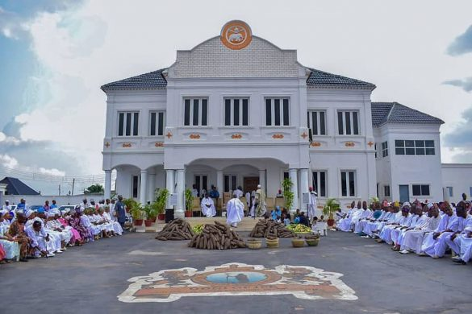

Top three activities to do in Ile-Ife that will ensure your visit is nothing short of magical.

Explore the Ooni's Palace
First on the list is a visit to the Ooni's Palace, the royal abode of the Ooni, the traditional ruler of Ile-Ife. This isn't just any old building; it's a cultural powerhouse. The architecture alone is a marvel.
Visit the Ife Museum
Another gem for history is the Ife Museum. You'll find a collection of ancient terracotta and bronze figures that are simply mind-blowing. These are masterpieces of ancient craftsmanship that have stood the test of time.

Visit the Erin-Ijesha Waterfall
A bit of a drive from Ile-Ife, but absolutely worth it, is the Erin-Ijesha Waterfall. This isn't just a cascade of water; it's a natural masterpiece. The hike to the top might leave you breathless, but the view is rejuvenating.